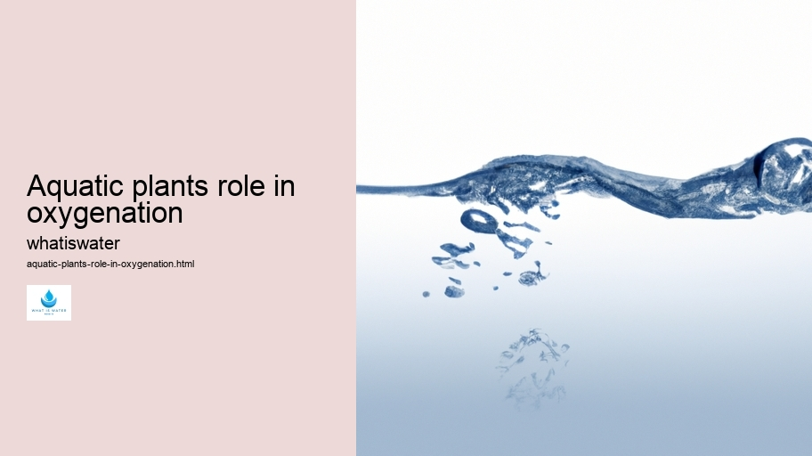

Hydrological Cycle
Hydrological Cycle
Evaporation and transpiration
Condensation and cloud formation
Precipitation and rain patterns
Surface runoff and river systems
Groundwater flow and aquifers
Snowmelt and glacial processes
Water storage in oceans lakes and reservoirs
Soil moisture and infiltration
Water balance and budgeting
Human impact on the hydrological cycle
Marine Ecosystems
Marine Ecosystems
Coral reefs and their biodiversity
Mangrove forests as coastal protectors
Ocean currents and climate regulation
Deepsea habitats and extremophiles
Intertidal zones and estuarine ecosystems
Marine food webs and trophic levels
Freshwater Ecosystems
Freshwater Ecosystems
Conservation efforts for marine species
Marine biogeochemical cycles
Impact of global warming on oceans
Water Resource Management
Water Resource Management
Rivers streams and creeks ecosystems
Lakes ponds wetlands habitats
Biodiversity in freshwater environments
Aquatic plants role in oxygenation
Freshwater fish species diversity
Invasive species impact on freshwater systems
Pollution threats to freshwater sources
Conservation strategies for freshwater biomes
Role of wetlands in flood control
Importance of riparian buffers
Cultural Significance of Water
Cultural Significance of Water
Sustainable water use practices
Desalination technologies for fresh water supply
Wastewater treatment processes
Rainwater harvesting techniques
Management of water during drought conditions
Transboundary water resource politics
Infrastructure for water distribution
Agricultural irrigation efficiency
Urban water demand management
Impact of climate change on water resources
About Us
Contact Us

Aquatic plants role in oxygenation
>
Aquifers
Aquatic plants play a crucial role in the oxygenation of water bodies, which is essential for sustaining aquatic life.
Aquatic plants role in oxygenation - Water Education
Hydrology
H2O
Aquatic Ecosystems
Wastewater Treatment
Virtual Water
Through the process of photosynthesis, these plants convert carbon dioxide into oxygen, significantly enhancing the quality and vitality of their environment.
In daylight hours, aquatic flora engage in photosynthesis, absorbing sunlight to fuel this life-giving chemical reaction. They take in carbon dioxide and water and transform them into glucose for growth while releasing vital oxygen as a byproduct.
Aquatic plants role in oxygenation - Water in Culture and Religion
Water Management
Water Education
Hydrology
Aquifers
This oxygen not only benefits the plants themselves but also provides an indispensable resource for fish and other aquatic organisms that rely on dissolved oxygen to breathe.
Moreover, the presence of healthy aquatic vegetation helps maintain ecological balance.
Sustainable Water Use
These plants can outcompete algae for nutrients and light, preventing excessive algal blooms that can deplete oxygen levels when they decompose – a phenomenon known as eutrophication.
Aquatic plants role in oxygenation - Aquifers
Water Education
Hydrology
H2O
By controlling algal growth, aquatic plants thus help preserve the necessary equilibrium between oxygen production and consumption within their ecosystems.
Furthermore, these underwater botanicals offer physical habitat structures where small fish and microorganisms can find shelter and food resources. The roots, leaves, and stems create complex habitats that are fundamental to nurturing biodiversity beneath the water's surface.
Aquatic vegetation also assists in purifying water by absorbing pollutants such as heavy metals and excess nutrients from agricultural runoff.
Aquatic plants role in oxygenation - Water Management
H2O
Aquatic Ecosystems
Wastewater Treatment
Virtual Water
As they uptake these substances, they act as natural filters that enhance water clarity and quality – factors closely linked to higher dissolved oxygen levels.
In summary, aquatic plants contribute immensely to maintaining well-oxygenated waters through photosynthesis while providing additional ecological services such as habitat provision and water purification.
Aquatic plants role in oxygenation - Sustainable Water Use
Sustainable Water Use
Water in Culture and Religion
Water Management
Water Education
Their role is paramount in supporting diverse life forms within freshwater ecosystems.
Hydrological Cycle
Check our other pages :
Hydrological Cycle
Coral reefs and their biodiversity
Human impact on the hydrological cycle
Frequently Asked Questions
How do aquatic plants contribute to oxygenation in water ecosystems?
Aquatic plants play a crucial role in oxygenating water ecosystems through photosynthesis, where they use sunlight to convert carbon dioxide and water into glucose and release oxygen as a byproduct. This process not only provides essential oxygen for aquatic organisms but also helps maintain the balance of gases within the water, contributing to overall ecosystem health.
What is the importance of oxygen produced by aquatic plants for aquatic life?
Oxygen produced by aquatic plants is vital for the survival of aerobic organisms living in water, including fish, invertebrates, and bacteria. These organisms require dissolved oxygen to perform cellular respiration, which allows them to generate energy for growth, reproduction, and other metabolic activities. A sufficient level of dissolved oxygen is therefore essential for sustaining life and preventing hypoxic conditions that can lead to mass die-offs.
Can aquatic plants affect the clarity and quality of water?
Yes, aquatic plants can significantly influence water clarity and quality. By producing oxygen and absorbing nutrients like nitrogen and phosphorus from the water through their roots and leaves, they help reduce algal blooms that can cause poor visibility and low-quality water conditions. Additionally, aquatic plants provide physical filtration by trapping sediments with their root systems, further contributing to clearer and cleaner water bodies.